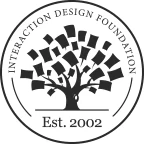
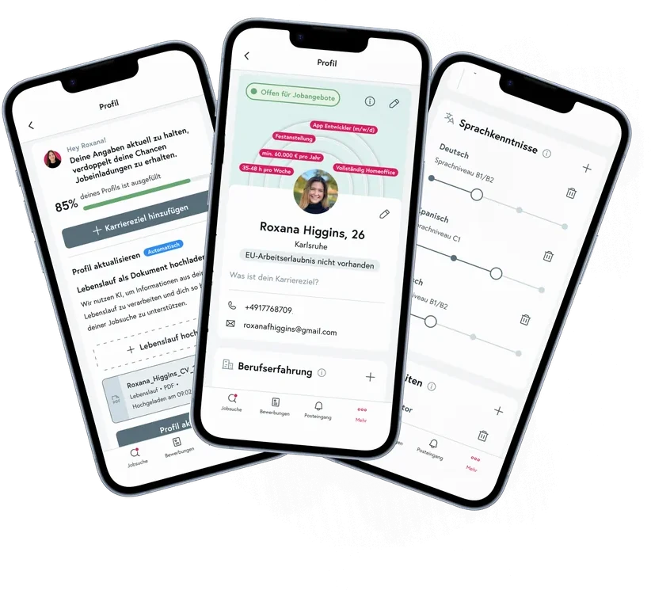
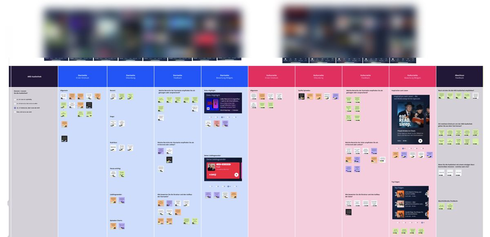

Product designer (UX/UI)
I design end-to-end experiences for multi-user products, from research and product direction to scalable systems and shipped interfaces.
Growth.Design
Product Psychology Masterclass ↗
Interaction Design Foundation
Web Design for Usability ↗ Web Applications and User Flows (link to follow)“Her remarkable ability to align design strategies with business objectives sets Roxana apart. Her work captivates users and drives tangible business growth, leading to increased user engagement and high NPS ratings.”
The candidate profile is what employers use to evaluate and contact talent, so I redesigned it and the reasons people keep it current.
Read the case study ↗
I shape the whole digital presence, from strategy and identity through to the website, then wire up the systems that keep it earning after launch.
Explore the projects ↗A public broadcaster wanted to know how a new app homepage would land before building it. I designed and ran the study that showed what people noticed, misread and expected next.
Read the case study ↗
I sincerely recommend her for her exceptional skills in user experience (UX) and behavioral design. She consistently demonstrated a profound ability to understand the user's perspective and design intuitive, engaging experiences that guided positive behaviors.
Ana K.User Research & Conversion Specialist
She has a strong instinct about design and usability and is a much loved member of our team. She holds herself to her own high standards and is always willing to push her designs to the next level. She keeps a calm head in brainstorming sessions, and makes sure that we step back and think through the bigger picture to ensure we're making informed decisions.
Jonathan F.Senior Product Designer
High praise for your great work. It was genuinely a pleasure to work with you. You delivered everything with real speed and care, the follow-ups were well timed, and you always kept what you promised.
KonstantinBusiness Owner, Germany. Translated from German.
I want to know why people do what they do, so I ask them and I watch them work.
I break a big problem into the smaller ones underneath it, then take those one at a time.
One screen is never just one screen. I look at what it connects to before I change it.
Let’s have a brief conversation about what you are looking for, whether that is a product designer for your team or support with an upcoming project. I can share more about my experience and approach, answer your questions and explore whether we would be a good match.
↗ Book a discovery callor find me on LinkedIn. Remote, in English or German.